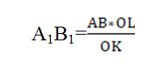

5-LABORATORIYA ISHI
Ishdan maqsad: Sezgi organlarni tuzilishi va faoliyatlari bilan tanishishdan iborat. Ko’rish analizatorning struktur xususiyatlari va funktsiyalari, bilan tanishish.
Vazifalar:
1) ko’rish o’tkirligini aniqlash;
2) ko’zning akkomodatsiyasini baholash;
3) Ko’zning to’r qavatida ko’r dog’ borligini isbotlash (mariott tajribasi)
4) ko’rish maydonini aniqlash;
5) teri va og’izdagi shilliq qavat esteziometriyasi
Kerakli jihozlar: ko’rish o’tkirligini aniqlash uchun jadvallar, 5 metrli lentali o’lchagich, ko’rsatkich-tayoq, santimetrli lenta,Forster perimetri, turli rangdagi belgilar, chizg’ich, rangli qalamlar, qalam, qora nuqta tushirilgan rasm, sekundomer, Ko’r dog’ni aniqlash uchun maxsus rasm, oq qog’oz, lineyka, qalam, Mariott jadvali, esteziometr (Veber sirkuli), paxta, virt. Ish odamda olib boriladi. Konsentratsiyasi ko’rsatilgan 4 flakon uchun joyi bo’lgan maxsus yashikchalarda 0,001%, 0,01%, 0,1% va 1% konsentratsiyaga ega bo’lgan shakar, osh tuzi, xlorid kislota, xininning eritmalari bo’ladi va har bir flakon esa alohida tomizgich bilan taxminlanadi.
1-ish. Ko’rish o’tkirligini aniqlash
Ko’rish o’tkirligi deb, ko’zning 2 ta nur chiqayotgan nuqtani alohida ko’rish qobiliyatiga aytiladi. Normal ko’z I ta nur chiqarilayotgan nuqtani 1° burchak ostida alohida ko’rish qobiliyatiga ega. 2 ta nuqtani alohida ko’rish, bu ko’rish, bu ikkita qo’zg’algan retseptor o’rtasida bitta retseptor qo’zg’almagan bo’lishi bilan bog’langan. Ko’rish retseptorining diametri 3 mk bo’lib, 2 ta nuqtani alohida ko’rish uchun bu 2 ta nuqtaning tasviri to’r qavatda 4 mk masofadan kam bo’lmasligi kerak va shunda tasvir kattaligi ko’rish burchagi 10 bo’lganda ko’rinadi. Shuning uchun ham 2 ta nur chiqarayotgan nuqtalar ko’rish burchagi osti 10 dan past bo’lganda ko’rilsa, nuqtalar qo’shilib ketishi mumkin.
Topshiriqning bosqichlari
Ko’rish o’tkirligini aniqlash uchun 12 qatorda joylashgan harfli belgidan iborat standart jadvaldan foydalaniladi harflar kattaligi yuqoridan pastga tushgan sayin kichrayib boradi. Har bir qator yonidagi son ko’rish burchagi osti 10 bo’lganda, normal ko’zning shu qatordagi harflarni alohida ko’rishi kerak bo’lgan masofani ko’rsatadi. Jadval yaxshi yoritilgan devorga osiladi (yorug’lik 10 lyuksdan kam bo’lmasligi kerak) yoki qo’shimcha elektr lampasi bilan yoritiladi. Tekshiriluvchi jadvaldan 5 metr uzoqlikdagi kursiga o’tqaziladi va bitta ko’zini maxsus moslama bilan berkitish taklif qilinadi. Tekshiruvchi ko’rsatkich tayoqchada tekshiriluvchiga harflarni ko’rsatib, ularning nomini aytishni so’raydi. Aniqlash yuqori qatordan boshlanib, eng pastdagi qatorgacha topiladi va tekshiriluvchi tomonidan 2-3 s davomida harflarni aniq va ravshan ko’rib, nomini aytish so’raladi. Keyin quyidagi formulaga asosan ko’rish o’tkirligi hisoblab chiqiladi:
bunda V- ko’rish o’tkirligi, a- tekshiriluvchi bilan jadval o’rtasidagi masofa, D normal ko’z shu qatordagi harflarni aniq ko’rishi o’rtasidagi kerak bo’lgan masofa. Shundan keyin ikkinchi ko’zning ko’rish o’tkirligi aniqlanadi.
Ish bayonnomasini tuzish bo’yicha tavsiyalar
Olingan natijalarni tajribalar daftariga yozib, normal ko’zning ko’rish o’tkirligi bilan taqqoslab, xulosa chiqaring.
2-ish. Ko’zning akkomodatsiyasi
Ko’zning akkomodatsiyasi deganda, uning turli masofadagi narsalarni aniq ko’rish qobiliyati tushuniladi. Akkomodatsiya, gavhar egriligining,binobarin, ko’zning nur sindirish ko’rsatkichining o’zgarish qobiliyatiga asoslanadi. Obyektni aniq-ravshan ko’rish uchun uning har bir nuqtasidan keluvchi nurlar to’r pardada bir nuqtaga yig’ilishi, ya’ni fokuslanishi kerak. Uzoqqa qaralsa, yaqindagi narsalar ravshan ko’rinmay, chaplashib ketadi. Buning sababi shundaki yaqin nuqtalardan keluvchi nurlar to’r parda orqasida to’planadi. Ko’zdan turlicha masofa uzoqlikda joylashgan narsalarni bir vaqtning o’zida bir xil ravshan ko’rish mumkin emas. Buni quyidagi tajriba yordamida tekshirish oson.
Topshiriqning bosqichlari
- subyektdan bir ko’zini kafti bilan yopishini so’rang;
- matnni 1,5 m uzoqlikda qo’ying va asta-sekin uni subyektning ko’ziga yaqinlashtiring, santimetrli lenta yordamida subyekt matnni yaxshi o’qiy oladigan masofani belgilang. AUN har bir ko’z uchun alohida belgilanadi. Odatda AUN 1,0 m va undan ortiq masofani tashkil qiladi.
Ak.Soha. = AUN - AYN.
Ish bayonnomasini tuzish bo’yicha tavsiyalar
Yaqin va olisdagi narsalarga qaraganda, ko’z gavharida nurlarning sinishi sxemasini tuzing, akkomodatsiyaning fiziologik mexanizmlarini tushuntiring. Har bir ko’zning AUN va AYN ni taqqoslang, ularning normal ekanligiga e’tibor bering.
3-ish. Ko’r dog’ni aniqlash
To’r pardadan ko’ruv nervi chiqadigan joyda fotoretseptorlar yo’q. Shu sababli bu yer ko’r nuqta-ko’r dog’ deyiladi. Agar nur shu qismga tushsa tasvir ko’rinmaydi. Ko’r dog’ narmal xolatda 2,5-6 mm 2 xajmda bo’ladi.
Topshiriqning bosqichlari
Ko’zga yaqin masofaga maxsus rasmni yaqinlashtiring. O’ng ko’zingizni yuming, chap ko’zingiz bilan rasmning o’ng tomonini belgilang. Rasmni ko’zingizga dastlab yaqinlashtiring so’ngra uzoqlashtiring. Ma’lum masofada
11-rasm.Ko’r dog’ni aniqlash usuli
Ko’r dog’ni ko’ndalangiga aniqlash uchun qog’ozning chap burchagiga belgi(krest) qo’ying va chap ko`zni berkitib o’ng ko’z bilan belgiga qarang. O’ng yuqori burchakdang belgi tomonga qalam (qalamning uchki qismidan qolgan barcha qismi oq qog’oz bilan o’ralgan) bilan yuring, ma’lum masofada qalam ko’rinmas xolatga keladi, belgiga yaqinlashgan sari u yana qalam xolatida ko’rina boshlaydi.
OK- rasmdan ko’zgacha bolgan masofa
OL-ko’rish nuqtasidan to’r pardagacha bo’lgan masofa
o’rtacha 17 mm
12-rasm. Ko’r dog’ni ko’ndalang uzunligini aniqlash usuli
Ish bayonnomasini tuzish bo’yicha tavsiyalar
Olingan natijalar asosida xulosa qiling.
3-ish. Ko’zning to’r qavatida ko’r dog’ borligini isbotlash (mariott tajribasi)
Topshiriqning bosqichlari
Sinaluvchi odam doira (O) va qo’shish belgisi (+) chizilgan kartonni oladi. Chap ko’zini yumib, o’ng ko’zi bilan krestga qarab turgan holda rasmni ko’ziga asta sekin yaqinlashtiradi.Tekshirish vaqtida sinaluvchi boshining holatini o’zgartirmasligi zarur. Ko’zdan nomalum masofada (20-25 sm) doira tasviri yo’qoladi. Bu doira tasviri ko’r dog`i tushganini tasdiqlaydi. Chap ko’zidagi ko’r dog`i ham shunday tekshiriladi.
Ish bayonnomasini tuzish bo’yicha tavsiyalar
Olingan natijalar asosida xulosa qiling.
4-ish. Ko’rish maydonini aniqlash (Perimetriya)
Ko’z bir nuqtaga qarab turganda, atrofdagi ko’zga ko’rinayotgan maydon ko’rish maydoni deb ataladi. Odamlarda ko’rish maydoni har xil bo’lib, bu ko’z soqqasining shakliga, uning joylanish chuqurligiga, qoshusti yoyi va burunning shakliga hamda to’r qavatning funksional holatiga boliq. Odamda rang (xromatik) va rangsiz (axromatik) ko’rish maydoni mavjud. Axromatik ko’rish maydoni xromatik ko’rish maydonidan katta bo’ladi, chunki axromatik ko’rish to’r qavatning asosan chet qismida joylashgan tayoqchalarning faoliyati bilan bog`langan bo’lishi mumkin. Har xil ranglar uchun ko’rish maydoni bir xil bo’lmay, balki sariq rang uchun eng kattaroq, yashil rang uchun esa eng torroq bo’lishi mumkin. Axromatik ko’rish maydonining chegarasi quyidagicha: tashqaridan 100° gacha, ichki va yuqoridan 60° va pastdan 65° (5-rasm).
Topshiriqning bosqichlari
Ko’rish maydoni Forster perimetri yordamida aniqlashadi. Perimetr yorulik qarshisiga o’rnatiladi. Tekshiriluvchi yorug`likka nisbatan orqa tomoni bilan o’tirgach, perimetr shtativining o’yilgan joyiga iyagini qo’yadi. Agar chap ko’zning ko’rish maydoni aniqlanadigan bo’lsa, iyak taglikning o’ng qismiga qo’yiladi.
|
13-rasm.Axromatik va xromatik ko’rish maydonining perimetrik surati. Shartli belgilar: 1) oq-qorani ko’rishmaydoni; 2) sariq rang uchun ko’rishmaydoni; 3) ko’k rang uchun ko’rishmaydoni; 4) qizil rang uchun ko’rishmaydoni; 5) yashil rang uchun ko’rishmaydoni. |
Taglikning balandligi shunday boshqariladiki, bunda ko’z kosasining pastki chegarasi shtativning yuqori chegarasiga to’ri kelsin. Tekshiriluvchi nigoh perimetr markazidagi oq nuqtaga qaratilgani holda, ikkinchi ko’z qo’l bilan yopilishi kerak. Perimetr yoyi gorizontal holatga qo’yilib, o’lchash boshlanadi. Buning uchun oq marka yoyning ichki yuzasi bo’ylab 90° dan 0° ga tomon sekin olib kelinadi va tekshiriluvchi oq nuqtaga qarab turgani holda markani ko’rayotganini aytish kerak. Tekshiruvchi to’ri kelgan burchakni aniqlab, ikkinchi martta yana tekshiradi. Ko’zning qancha ko’p meridiani bo’yicha ko’rish maydoni aniqlansa, shuncha u aniq bo’ladi. Bu usulni egallab olish uchun 2 ta asosiy meridian: gorizontal (tashqi, ichki) va vertikal (yuqori, pastki) bo’yicha aniqlash bilan chegaralash mumkin.
|
|
|
|
14-rasm.Peremetr asbobi |
|
Oq rang boshqa rangga almashtirilib, yuqoridagi usulga asosan boshqa ranglarni ham ko’rish maydoni aniqlanadi. Tekshiriluvchi rangni aniq bilishi kerak. Ko’rish maydonini berilgan bir necha ranglarda ham aniqlash mumkin.
Ish bayonnomasini tuzish bo’yicha tavsiyalar
Tekshirish natijalarini jadvalga yozing.
20-jadval.Ko’rish maydonining chegaralari, gradus
|
Yo’nalishi |
Ko’rish maydonining gradusdagi kattaligi |
|
|
Oq ranga |
Qizil ranga |
|
|
Yuqoridan Pastdan O’ng tomondan CHap tomondan |
|
|
Olingan natijalarga asoslanib, 2 ta rang uchun ko’rish maydonini chizing, oq va qizil ranglar uchun ko’rish maydonini taqqoslang va ular o’rtasidagi farqlar sababini tushuntiring.
4-ish. Teri va og’izdagi shilliq qavat esteziometriyasi
Taktil sezuvchanlik esteziometriya yordamida o’rganiladi. Masofa sezuvchanligi farqlanib, u masofa pog`onasini xarakterlaydi, pog`ona kuchiga asosan esa sezuvchanlik aniqlanadi. Tarqalish sezuvchanligining masofa (fazoviy) pog`onasi deb, teri yoki shilliq qavat ikkita sezgi beradigan nuqtasi o’rtasidagi minimal oraliq bir vaqtda ta’sirlanganda ikkita narsa tekkanidek his qilishiga aytiladi. Bu teri va shilliq qavatning masofa farqlash qobiliyatini belgilaydi. Eng yuqori farqlash xususiyatiga ega bo’lgan joylar quyidagicha: til uchida-1,1 mm; burun uchida- 6,8 mm, lablar, qo’l panjalarining kaft so’asida- 2,2 mm, qo’l kaftining tashqi soxasi- 31 mm, boldir- 40,5 mm, orqa- 54,1 mm, son va elka 67,6 mm da ekanligi aniqlangan.
|
15-rasm. Esteziometr (Veber sirkuli) |
Topshiriqning bosqichlari
Kursida o’tirgan tekshiriluvchiga ko’zlarini yumish taklif qilinadi. Esteziometr (8-rasm) oyoqchalari maksimal yaqinlashtirilgan holatda teri yoki shilliq qavatning ma`lum joyiga tekkiziladi. Esteziometr oyoqchalari bir xil vaqt va bosimda tekkizilishini nazorat qilmoq zarur. Esteziometr oyoqchalari asta-sekin kengaytirilib (har safar 1 mm ga oshirish), ikkita alohida taqalish sezgisining paydo bo’lishi uchun kerak bo’lgan minimal masofa aniqlanadi. Masofa pog`onasi orqa teri, qo’l panjasining tashqi yuzasi, qo’lning panjalar uchi, til uchining shilliq qavati va yuqori jag` milkining markaziy so’rg`ichlarida aniqlanadi.
Ish bayonnomasini tuzish bo’yicha tavsiyalar
Daftaringizdagi jadvalga topilgan masofa pog’ona sezuvchanligi kattaligini yozing.
21-jadval.Teri va shilliq qavatning fazoviy pog`ona sezuvchanligining ko’rsatkichlari
|
Tekshiriladigan joylar |
mm dagi masofa (fazodagi) pog`ona sezuvchanligi |
|
Orqa terisi Qo’l panjasining orqa yuzasi Qo’l panjalarining uchi Tilning uchi Milk so’richi |
|
Olingan natijalarni solishtiring va ularning farqini tushuntiring.
5-ish. Tuz tami sezgisi. taom sezish pog’onalarini aniqlash
Taom sezish pog`onasi deganda, konsentratsiyasi eng past bo’lgan taom beruvchi moddalar eritmasi, ular tilga tomizilganda u yoki bu taomni sezish tushuniladi. Ushbu farazni quyidagicha amalga oshirish mumkin.
Topshiriqning bosqichlari
Tomizgich yordamida u yoki bu eritmadan tekshiriluvchining tiliga tomiziladi (taom sezish maydonlarini topografiyasi quyidagicha: til uchida shirin moddalar, yon satxlarida-nordon va sho’r, ildizida esa achchiq moddalar seziladi). Tekshirish eng past konsentratsiyadan boshlanib, tekshiriluvchi ma`lum taomini sezguncha oshirib boriladi. har bir sinov 10-12 s davom etib, sinovdan keyin og`iz suv bilan chayqalishi albatta shart. Sinovlar orasi 1-2 minut bo’lishini saqlash kerak.
Tomchi bilan ta’sirlash usuli orqali olingan normal taom sezish pog’onasi quyidagi konsentratsiyalar: 0,25% dan 0,25% gach a shirin va sho’r uchun; 0,05% dan 1,25 %gacha nordon uchun; 0,0001 %dan 0,003% gacha achchiq uchun qabul qilingan.
Ish bayonnomasini tuzish bo’yicha tavsiyalar
Olingan natijalarni quyidagi jadvalga ko’chiring va xo’losa qiling.
23-jadval.Ta’m sezish pog’onasining ko’rsatkichlari
|
Ta’mli moddalar |
Eritmalarning % dagi pog`ona konsentratsiyasi |
|
Shirin Achchiq Nordon Sho’r |
|
|
|
|